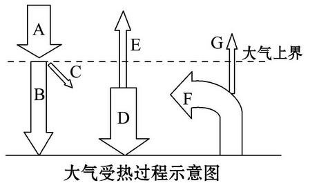

冷热不均引起大气运动练习
幻灯片切换效果
None - Fade - Slide - Convex - Concave - Zoom
选择班级
幻灯片样式
Black (default) -
White -
League -
Sky -
Beige -
Simple
Serif -
Blood -
Night -
Moon -
Solarized
阅读下图，回答1～4题。。
1.图中A、B、C三个箭头所表示的辐射依次是( )
A.大气逆辐射、地面辐射、太阳辐射
B.太阳辐射、地面辐射、大气逆辐射
C.地面辐射、大气逆辐射、太阳辐射
D.太阳辐射、大气逆辐射、地面辐射
2.下列辐射的波长由长到短排列的一组是( )
A.地面辐射→大气辐射→太阳辐射
B.大气辐射→地面辐射→太阳辐射
C.太阳辐射→地面辐射→大气辐射
D.大气辐射→太阳辐射→地面辐射
3.大气主要的直接热源是( )
A.地面辐射
B.太阳辐射
C.大气辐射
D.大气逆辐射
4.对地面起保温作用及其对应的字母分别是( )
A.到达地面的太阳辐射
B.大气的反射作用D
C.大气的吸收作用B
D.大气的逆辐射作用C
5.新疆“早穿皮袄午穿纱，围着火炉吃西瓜”的主要原因是 ①白天大气反射作用强 ②夜间大气逆辐射弱 ③大气对太阳辐射削弱作用小 ④大气吸收太阳辐射少
A.①②
B.②③
C.③④
D.①④
6.地面上不同地区的热量差异会引起空气流动。下列示意图中符合热力环流原理的是( )
A.A
B.B
C.C
D.D
7.下图为热力环流侧视图，下列说法正确的是( )
A.温度：a>b>c>d
B.气压：d>a>b>c
C.引起该环流形成的原因是地面冷热不均
D.热力环流是大气运动最复杂的形式
8.读下面我国东部沿海某地热力因素形成的高空等压面示意图，完成下列要求。
(1)高空C比D的气压[高 ](高或低)，地面A比B的
气压[低 ](高或低)。
(2)A比B的温度[ 高 ](高或低)。
(3)ABCD之间的热力环流呈[顺 ](顺或逆)时针
方向流动。
9.图说地理。解读图中信息，判断正误。正确的在括号内打“√”，错误的打“×”。
(1)A为太阳辐射，为长波辐射( × )
(2)A为短波辐射，E、F为长波辐射( √ )
(3)夜间多云时，气温比晴天高，主要与B有关(× )
(4)深秋的农田，燃烧秸秆目的是增加D的作用( √ )
(5)C表示大气对太阳辐射的吸收作用( √ )
1.下图为北京某年3月8日和3月9日气温变化图，读图判断下列说法正确的是( )
A.3月9日白天与夜晚气温都比3月8日低
B.3月8日是晴天，3月9日是阴天
C.云层对大气不一定具有保温作用
D.体现了云层对太阳辐射和地面辐射的反射作用
《齐民要术》中有这样一段描述：“凡五果，花盛时遭霜，则无子。天雨新晴，北风寒彻，是夜必霜。此时放火作煴［(yūn)，无焰的微火］，少得烟气，则免于霜矣。”读上文，回答2、3题。
2.“天雨新晴，北风寒彻”造成“是夜必霜”，其原因是
A.雨后的夜晚气温必定很低
B.受冷空气影响，加之晴朗的夜晚，大气逆辐射弱
C.晴朗的夜晚，水汽含量大
D.晴朗的夜晚，地面辐射加强
3.“放火作煴，少得烟气，则免于霜矣”的原因是( ) ①“烟气”使得大气逆辐射增强，使地面温度不致于降得过低 ②“烟气”的主要成分为CO2，对地面有明显的保温作用 ③“放火作煴”，将地面直接烤暖 ④“放火作煴”，将大气直接熏暖
A.①②
B.③④
C.①③
D.②④
(2011·潍坊模拟)读大气热力作用示意图，回答4、5题。
4.有关大气热力作用的说法正确的是( )
A.③只出现在晚上
B.①为长波辐射，②为短波辐射
C.地面热量的收入主要来自③
D.近地面大气的直接热源是②

5.青藏高原与四川盆地纬度相当，关于两地热力状况的比较，正确的是( )
A.青藏高原的年平均气温较低，与①大小有关
B.四川盆地的年太阳总辐射量较小，与②大小有关
C.四川盆地的气温日较差较小，与①③大小有关
D.青藏高原的年太阳辐射总量较大，与④大小无关
6.下面的等压面分布图中，正确的是( )
A.A
B.B
C.C
D.D
7.下图为城市风原理逻辑图，甲乙丙丁分别表示热力环流的某个环节，数字序号为具体内容，下列组合最恰当的是( )①城区和郊区地面冷热不均 ②空气垂直运动 ③高空、近地面同一水平面气压差异 ④空气水平运动
A.甲① 乙④ 丙③ 丁②
B.甲① 乙② 丙③ 丁④
C.甲③ 乙② 丙① 丁④
D.甲② 乙③ 丙① 丁④
8.下图为海陆风示意图，此图表示的昼夜状况和风向是( )
A.白天，海风
B.夜晚，海风
C.夜晚，陆风
D.白天，陆风
9.读相同纬度的拉萨和宁波海拔示意图，分析回答下列问题。(9分)
(1)在同等天气条件下，两地中太阳辐射较强的是[拉萨]，理由为[海拔高，空气稀薄，对太阳辐射削弱少]。
(2)两地中白天气温较低的是[拉萨]，理由为
[拉萨地区地势高，空气稀薄，近地面
空气得到的地面辐射和太阳辐射都比较少]。
(3)两地中夜晚气温较高的是[宁波]，理由为[
海拔低，水汽和二氧化碳含量多，大气逆辐射强]